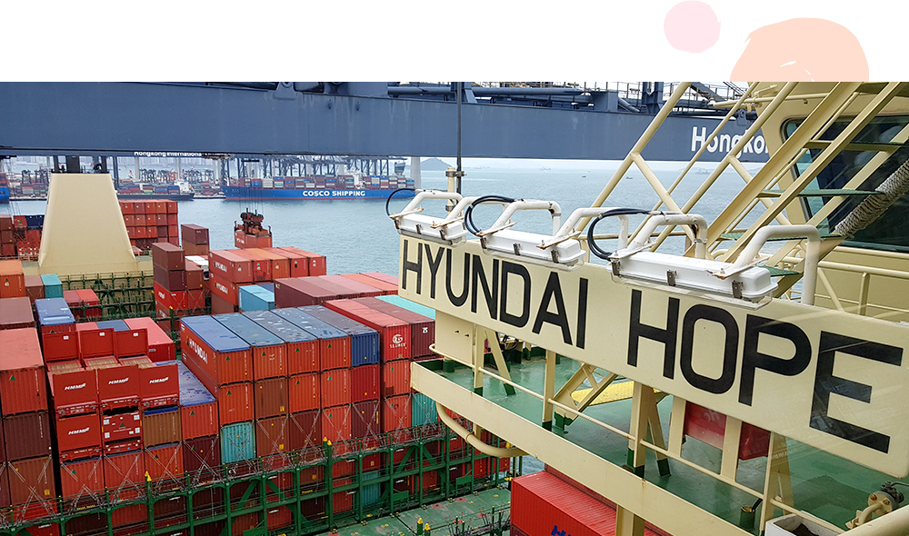

와 제 롤모델이 잡스에요!!! 아이폰 첫 출시되고 나서부터 계속 아이폰 쓰고 있는데 잡스가 너무 그리워요ㅠㅠ 지금은 돈만 벌려고 하는 것 같아서 디자인 발전도 없고ㅠㅠ와 제 롤모델이 잡스에요!!! 아이폰 첫 출시되고 나서부터 계속 아이폰 쓰고 있는데 잡스가 너무 그리워요ㅠㅠ 지금은 돈만 벌려고 하는 것 같아서 디자인 발전도 없고ㅠㅠ와 제 롤모델이 잡스에요!!! 아이폰 첫 출시되고 나서부터 계속 아이폰 쓰고 있는데 잡스가 너무 그리워요ㅠㅠ 지금은 돈만 벌려고 하는 것 같아서 디자인 발전도 없고ㅠㅠ와 제 롤모델이 잡스에요!!! 아이폰 첫 출시되고 나서부터 계속 아이폰 쓰고 있는데 잡스가 너무 그리워요ㅠㅠ 지금은 돈만 벌려고 하는 것 같아서 디자인 발전도 없고ㅠㅠ와 제 롤모델이 잡스에요!!! 아이폰 첫 출시되고 나서부터 계속 아이폰 쓰고 있는데 잡스가 너무 그리워요ㅠㅠ 지금은 돈만 벌려고 하는 것 같아서 디자인 발전도 없고ㅠㅠ
What’s Your Story
Story of the
Filming of the EBS
(Korea Educational Broadcasting System)
Documentary,
“Docuprime”
Seongmin Kim / HMM HQ
Last March, the production crew of EBS Docuprime visited HMM HQ in Seoul. They were preparing a documentary with the provisional title of 'How many people are involved till my sneakers were safely delivered to me?'. The premise of the documentary was to highlight that sneakers, which can be easily purchased by customers, actually required the efforts of numerous people to be made. The crew has said that they will film the collecting of materials, manufacturing of the sneakers and transportation processes for this documentary. The reason why the production crew visited HMM was to request our cooperation in filming the transportation of the sneakers.
In mid-April, the EBS Docuprime production crew began filming the loading and unloading of containers at Busan New Port (PSA HPNT) with HMM. In early May, the crew filmed the rubber estates of Malaysia, and by the end of May, the sneakers factory of Slovakia. And last, from June 19 to 22, the crew got on board the vessel, Hyundai Hope, and began to film the maritime transportation process from Hong Kong to Busan New Port.

Hyundai Hope at anchor in Hong Kong.
Hyundai Hope sailing from Hong Kong to Busan.
The EBS production crew finished boarding and started to film the daily lives of the sailors with their cameras. At the port, they filmed the hasty operations of the deck office.
EBS camera filming the deck office.
KWON, TAE-SOO, the chief officer is on night duty.
And after departure, they did not miss the image of the chief officer and quarter master who were sitting in silence on night duty at dawn.
KWON, TAE-SOO, the chief officer is starting his interview at the deck office.
We could not miss the interview in a documentary. Although he might feel fatigue after night duty from 04:00 to 08:00 AM, the chief mate willingly does the interview. He told us about the efforts to carry the freights safely and on the daily lives of the sailors. For reference, he is a newlywed groom who got married February this year. He told us that he wants to stay all day with his wife on his vacation.
Sailors during their meeting on deck operations.
KWON, TAE-SOO, the chief officer starts the meeting with the members with no break. It seems that today's principal duties are the inspection of the freights and the deck cleaning.
Deckhands cleaning the deck.
The deckhands Myo and Ko Ko who are from Miyanma are cleaning the deck. If Ko Ko strongly pours the sea water on the floor, then Myo starts to sweep.
Myo, the deckhand interviewed at the wing bridge.
We also performed an interview with Myo. We talked a lot about the duties which Myo is in charge of, his motive for deciding to be a sailor, and the dream he wanted to achieve.
After hastily finishing their daily duties, the three sailors visited the kitchen to share Burmese food. They encountered a mate who was preparing a late-night meal. The sailors naturally started to prepare the food together.
Sailors making late night meal in the kitchen.
So naturally we prepared and shared meals together. The production crew of EBS was very delighted as they thought they 'got lucky' for the unexpected pleasant scene.
Engineers moving the equipment.
On the third day on board, we filmed the engine room. We filmed the bare image of the engineers working within the hot and noisy space for the safest sailing.
Hyundai Hope entering into the Busan New Port.
The three nights and four days came and went, and the Hyundai Hope entered into Busan New Port. Thanks to the kind cooperation of all the people of Hyundai Hope even during their busy working schedules, we could take part in their daily lives through our camera.
The documentary filmed by EBS was broadcasted on August 27, Monday at 09:50 PM, Korean Standard Time. We sincerely hope that the images of the people of HMM who struggled to carry the numerous freights to different parts of the world will be seen by as many viewers as possible.
Let’s watch highlights of EBS Docuprime
Source : EBS
-
Great
322
-
Like
322
-
Sad
322
-
So-so
322
-
Angry
322